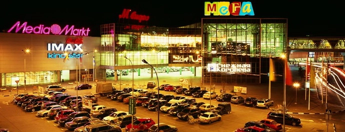
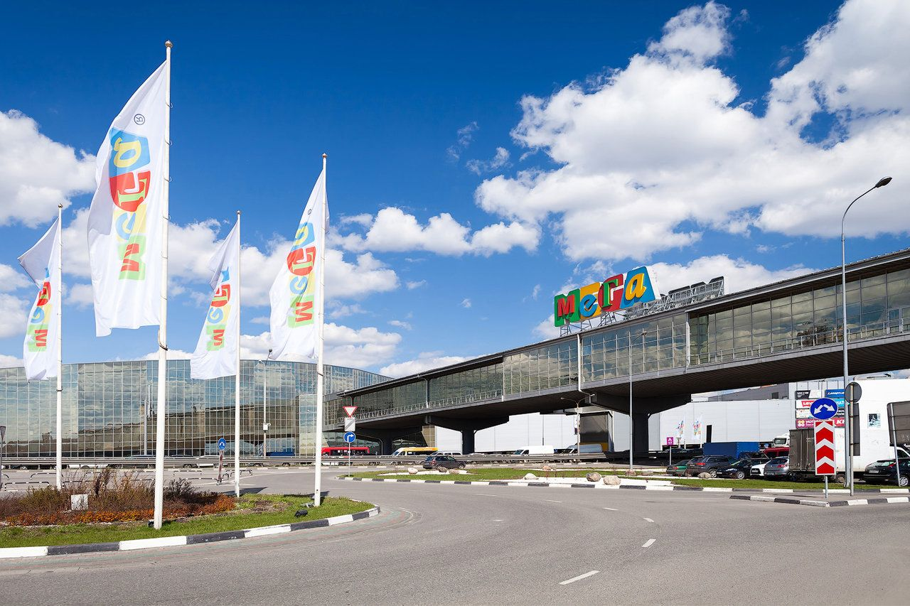
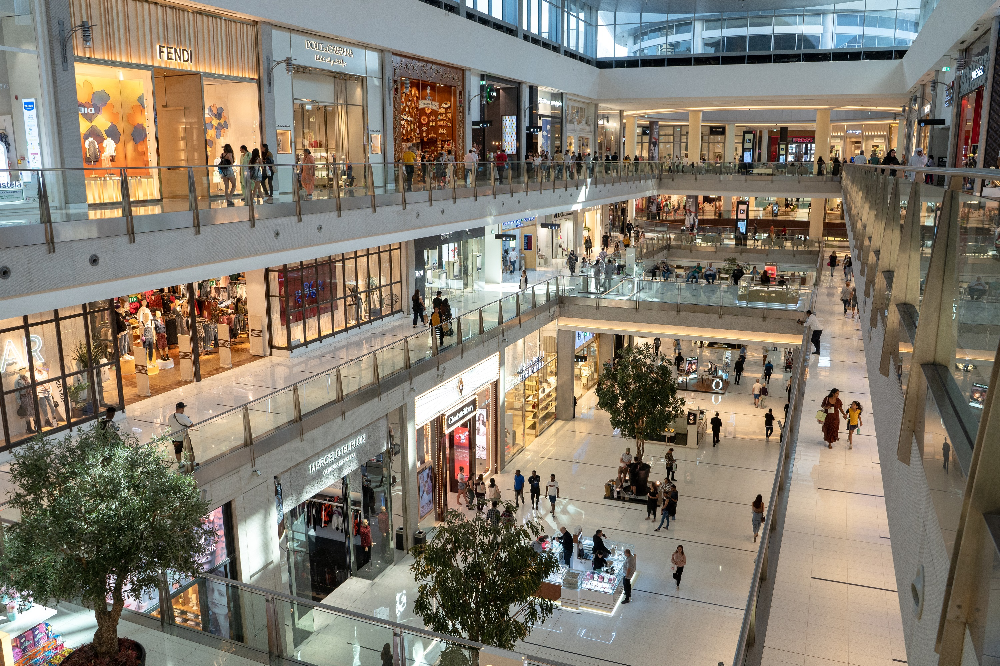
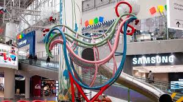
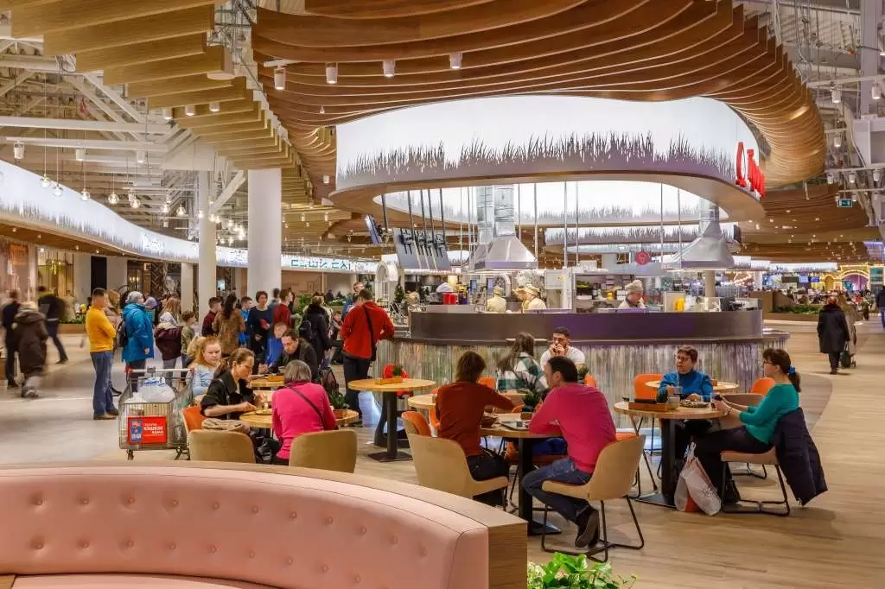
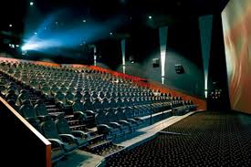

«Мега Белая Дача» — это крупный торгово-развлекательный центр в Котельниках (Московская область), один из крупнейших в Европе,
открытый в рамках проекта IKEA и компании «Белая Дача», предлагающий магазины, развлечения и услуги,
расположенный на 14-м километре МКАД, рядом с исторической агрофирмой Мега (сеть торговых центров).
Ключевые факты:
Расположение: Котельники, 14-й км МКАД, 1-й Покровский проезд, 5.
Тип: Торговый центр (ТЦ).
История: Строительство началось в 2004 году, открыт в несколько этапов, вторая фаза открылась 29 ноября 2007 года.
Владелец: Сеть «Мега» (ранее IKEA, теперь принадлежит «Газпромбанку» с 2023 года), а также прилегающая территория связана с агрофирмой "Белая Дача".
Размер: Один из крупнейших ТЦ в Европе по торговой площади.
Особенность: Название связано с историческим совхозом «Белая Дача», рядом с которым расположен.




